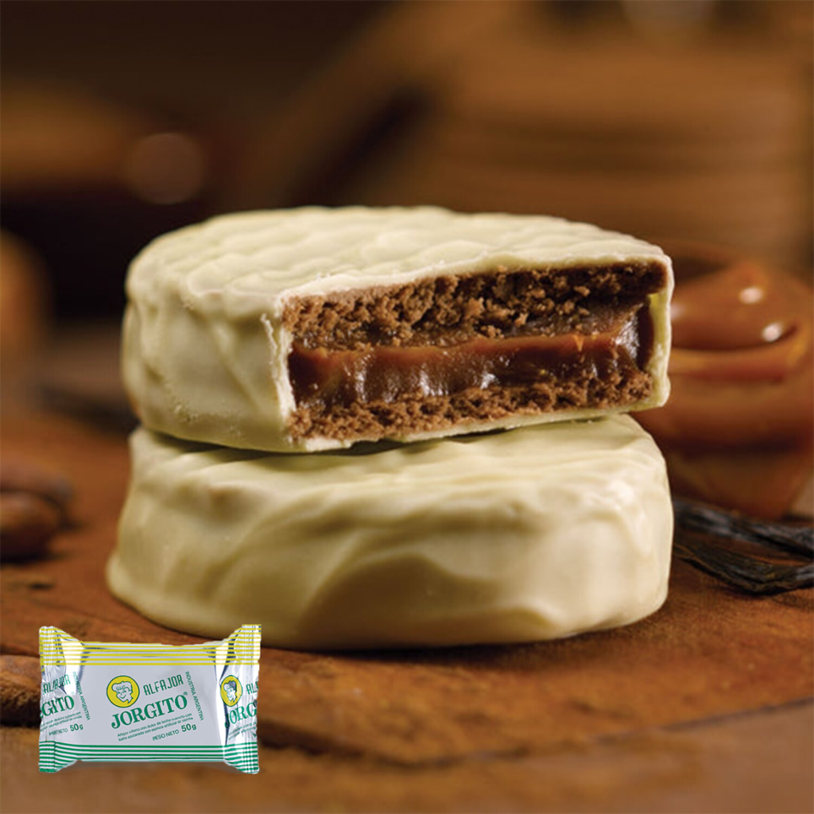
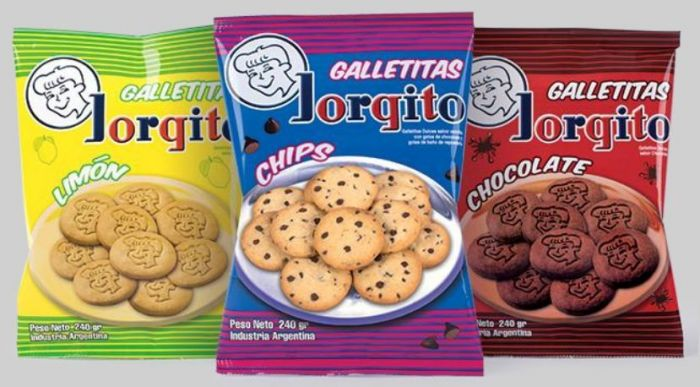

Este alfajor es perfecto para compartir con amigos y familiares
en cualquier momento del día. Con un peso de 50g por unidad, cada alfajor
está relleno de un suave dulce de leche y cubierto con una capa de chocolate
negro de alta calidad, brindándote una experiencia de sabor inigualable.

Productos
Galletitas
Alfajores Clasico